Draußen
vor der Tür
Wolfgang Borchert
Ein Stück das kein Theater spielen und kein Publikum sehen will.Wolfgang Borchert

- *20.05.1921 in Hamburg, als Sohn eines
Volksschulehrers und einer Autorin - 1939: Beginn einer Buchhändlerlehre
- 1940: Abbruch der Lehre zugunsten von
Schauspielunterricht - 1941: Engagement als Schauspieler an der Landesbühne
Ost-Hannover
Schönste Zeit seines Lebens - aus seinem Lebenstraum gerissen.
Wolfgang Borchert - Kriegszeit
- 1941:
- Einzug zum Wehrdienst und Ausbildung zum Panzergrenadier
- Augenzeuge schwerer, verlustreicher Schlachten gegen sowjettische Truppen
- Äußert sich in Briefen kritisch zu Krieg und NS
Nazi Propaganda redet von heroisch-völkischen Siegen
Wolfgang Borchert - Kriegszeit
Die Freiheit ist tot. Alle Freiheit. Wohl haben wir unser inneres Reich - aber woran sollen wir noch glauben?
Da sitzen wir in Neros Mantel und singen - während alles versinkt und untergeht.
Da sitzen wir in Neros Mantel und singen - während alles versinkt und untergeht.
Wolfgang Borchert - Kriegszeit
Meine Kameraden, die vor vierzehn Tagen herausgekommen sind, sind alle gefallen. Für nichts und wieder nichts.
Wolfgang Borchert - Kriegszeit
Ich empfinde die Kasernen als Zwingburgen des Dritten Reiches.
Wolfgang Borchert - Kriegszeit
Ich fühle mich selbst als wesenlosen Kuli der braunen Soldateska.
Wolfgang Borchert - Kriegszeit
- 1942:
- Verwundung auf Patrouillengang und Diphterie
- Überführung in Heimatlazarett Schwabach
- Untersuchungshaft wegen Vorwurf der Selbstverstümmelung
- Beantragung der Todesstrafe (Tod durch Erschießen)
Wolfgang Borchert - Kriegszeit
- 1942:
- Freispruch von der Todesstrafe
- Fortsetzung der U-Haft durch Anklage wegen "staatsgefährdender" Briefe
- Sechswöchige "verschärfte" Haft mit anschließender "Frontbewährung"
Sitzt in der Zelle und wartet auf den Tod
Wolfgang Borchert - Kriegszeit
- 1943:
- Auftritt im "Bronzekeller" als Kabarettist währen Urlaub in Hamburg
- Entlassung aus dem Kriegsdienst wegen Lebererkrankung
- Freistellung für ein Fronttheater
- Stattdessen Inhaftierung wegen einer Parodie auf Propagandaminister Dr. Goebbels
Wolfgang Borchert - Kriegszeit
- 1944:
- Verurteilung wegen "Zersetzung der Wehrmacht"
- Gefängishaft von neun Monaten; Entlassung zur Feindbewährung an der Front
- 1945:
- Borcherts Truppe stellt sich der franz. Streitmacht
- Während des Abtransportes gelingt ihm die Flucht
Die Nachkriegszeit
- Borchert ist schwer krank und geschwächt durch den Krieg
- Regieassitenz am Hamburger Schauspielhaus
- Viele Kurzgeschichten
- Innerhalb einer Woche schreibt er "Draußen vor der Tür"
- 1947:
- Borchert stirbt einen Tag vor der Uraufführung
Inhalt - Vorspiel
Der Wind stöhnt. Die Elbe schwappt gegen die Pontons. Es ist Abend. Der Beerdigungsunternehmer. Gegen den Abendhimmel die Silhouette eines Menschen- ...der zu Beginn ins Wasser springt (Beckmann?)
- Gott beklagt seine Kinder. Er ist der Gott, an den keiner mehr glaubt
- Der Tod profitiert von der großen Anzahl an Todesopfern: Rums!
- der ALTE MANN tritt auf und die Szene entpuppt sich zu einem Gespräch zwischen Gott und dem Tod
- ...Kinder, die er nicht retten kann. Sie ermorden sich gegenseitig
- Der BEERDIGUNGSUNTERNEHMER rülpst ununterbrochen
Inhalt - Der Traum
In der Elbe. Eintöniges Klatschen kleiner Wellen. Die Elbe. Beckmann- Beckmanns Selbtsmordversuch schlägt fehl
- Die ELBE weist Beckmann hart zurück: (...) ich scheiß auf deinen Selbstmord!
- Beckmann hat Hunger, humpelt und seine Frau hat einen neuen
Inhalt - Erste Szene
Abend. Blankensee. Man hört den Wind und das Wasser. Beckmann. Der Andere- Der ANDERE tritt auf: Ich bin der Optimist (...), der Jasager bin ich.
- Beckmann weist ihn zurück: Beckmann sagte sie, wie man zu einem Tisch Tisch sagt.
- und weiter: sein verstorbener Sohn
- Beckmann berichtet weiter von seinem im Trümmerfeld verstorbenen Sohn, den er noch nie zu Gesicht bekommen hat
Inhalt - Erste Szene
Abend. Blankensee. Man hört den Wind und das Wasser. Beckmann. Der Andere- Das MÄDCHEN tritt auf: Fisch
- Schluss: Dann stehen sie wieder vom Sterbebett auf und sind gesund wie zehntausend Hirsche im Februar.
- Das MÄDCHEN tritt auf. Sie hat Mitleid mit Beckmann, den sie zärtlich Fisch nennt. Sie nimmt ihn mit zu sich nach Hause
Inhalt - Zweite Szene
Ein Zimmer. Abends. Eine Tür kreischt und schlägt zu. Beckmann. Das Mädchen- Beckmanns Gasmaskenbrille: Sie macht sich lustig, er braucht sie
- Sie überlässt ihm die Jacke ihres Mannes
- Der EINBEINIGE tritt auf. Er fordert seinen Mantel und seine Frau zurück: Beckmann...Beckmann...Beckmann!!!
- Der EINBEINIGE ruft immer wieder Beckmanns Namen
Inhalt - Zweite Szene
Ein Zimmer. Abends. Eine Tür kreischt und schlägt zu. Beckmann. Das Mädchen- Beckmann flüchtet
- Unteroffizier Beckmann → Schuldgefühle
- Der ANDERE schlägt vor, den OBERST zu besuchen und ihm die Verantwortung zurückzugeben.
- Beckmann will sich erneut in die Elbe stürzen
- Der ANDERE hält Beckmann auf und entlockt ihm eine Erzählung, dass er Unteroffizier des EINBEINIGEN und mit ihm insgesamt 20 Mann war. An der Verletzung sei er Schuld
Inhalt - Dritte Szene
Eine Stube. Abend. Eine Tür kreischt und schlägt zu. Der Oberst und seine Familie. Beckmann- Beckmanns Traum vom Meer der Toten
- Beckmann fordert den OBERST auf, die Verantwortung für 11 Mann zurückzunehmen
- OBERST und seine Familie beim Abendessen
- MUTTER und TOCHTER haben Angst vor Beckmanns Erscheinung, der SCHWIEGERSOHN ist aufgebracht von seinen Erzählungen aus dem Krieg
- Beckmanns Traum: Ein General spielt mit dünnen Armprothesen auf einem Xylofon aus Menschenknochen. Das Lied ist ein Marschlied; und zwar Alte Kameraden. Das Meer der Toten erhebt sich aus ihren Gräbern. Nachdem Beckmann die Verantwortung bekommt, brüllen sie immer wieder seinen Namen. Bis er schreiend erwacht
Inhalt - Dritte Szene
Eine Stube. Abend. Eine Tür kreischt und schlägt zu. Der Oberst und seine Familie. Beckmann- Beckmann erntet Spott, er konfrontiert den OBERST
- und weiter: (...) mein lieber Junge! Werden sie erstmal wieder ein Mensch!!!
- ...und zwar mit der Anzahl Toter, die ihn Nachts besuchen. Der OBERST – sichtlich gerührt – lacht laut auf und beglückt Beckmann zur tollen Vorstellung
- Die Szene löst sich in einem Tumult auf, Beckmann nimmt sich Brot und Rum
Inhalt - Vierte Szene
Ein Zimmer. Der Direktor eines Kabaretts. Beckmann, noch leicht angetrunken- Beckmanns Vortrag: eine sarkastisch umgedichtete Version des Schlagers Tapfere kleine Soldatenfrau
- Der DIREKTOR fürchtet um sein Publikum: Ja, Wahrheit! Mit der Wahrheit hat doch die Kunst nichts zu tun!
- Der Vortrag ist ihm nicht heiter genug
Inhalt - Vierte Szene
Ein Zimmer. Der DIREKTOR eines Kabaretts. Beckmann, noch leicht angetrunken- Beckmann, verbittert, will sich wieder in die Elbe ertränken
- Der ANDERE → Eltern
- Er schöpft erneut Hoffnung als der ANDERE ihm von seinen Eltern erzählt. Er will sie sehen
Inhalt - Fünfte Szene
Ein Haus. Eine Tür. Beckmann- Fremdes Namensschild am Haus seiner Eltern
- FRAU KRAMER erzählt vom Selbtsmord seiner Eltern
- Der Vater, ein aktiver Nazi, verlor nach dem Krieg Haus und Pension
Inhalt - Fünfte Szene
Ein Haus. Eine Tür. Beckmann- Na, da haben sie sich dann selbst endgültig entnazifiziert. Das war nun wieder konsequent von Ihrem Alten, das muss man ihm lassen
- Einen Morgen lagen sie steif und blau in der Küche. So was Dummes, sagt mein Alter, von dem Gas hätten wir einen ganzen Monat kochen können
- Beckmann bricht zusammen
Inhalt - Fünfte Szene
Ein Haus. Eine Tür. Beckmann- In einem Traum wird Beckmann mit allen Figuren des Stücks erneut konfrontiert
- Der ANDERE fährt immer wieder dazwischen: Die Menschen gehen nicht an deinem Tod vorbei, Beckmann. Die Menschen haben ein HerzKomm, Beckmann! Lebe! Die Straße ist voller Laternen. Alles lebt! Lebe mit!
- Doch alle nacheinander enttäuschen Beckmann schwer. Nur der Tod als STRASSENFEGER verspricht ihm eine Tür offen zu lassen
Inhalt - Fünfte Szene
Ein Haus. Eine Tür. Beckmann- Beckmann erwacht, die Worte des EINBEINIGEN noch im Ohr: Das musst du mir versprechen, dass du deinen Mord nicht vergisst!
- Beckmann resümiert seine Heimkehr, seinen Mord: Wir werden jeden Tag ermordet, und jeden Tag begehen wir einen Mord.
Inhalt - Fünfte Szene
Ein Haus. Eine Tür. Beckmann- Der ANDERE bleibt stumm
- Gott bleibt stumm
- Gibt denn keiner, keiner Antwort???
Aktuelle Aufführung: Radio (1947)
- Erstaufführung als Hörspiel im NWDR
- Aufgrund des großen Erfolges wird die Sendung am nächsten Tag wiederholt
- Ida Ehre (Leiterin der Hamburger Kammerspiele) ist so begeistert, dass sie das Stück auf die Bühne bringen will
Aktuelle Aufführung: Radio (1947)
- Das Stück trifft einen Nerv der deutschen Nachkriegsgeneration
- Der Generation der Kriegsheimkehrer warf man vor keine Ideale zu haben
- Man hat sie angerufen zu reden, aber keiner tat es
- Wolfgang Borchert ist der erste der antwortet
Aktuelle Aufführung: Radio (1947)
Hans Quest, Sprecher von Beckmann, erinnert sich:
Und nach der Ursendung im Februar '47 stand das Telefon nicht still, so dass am nächsten Abend die Sendung wiederholt wurde schon, eine Programmänderung.
Aktuelle Aufführung: Uraufführung
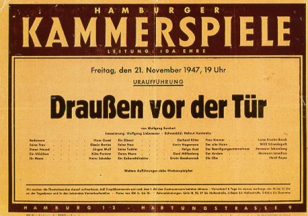
Aktuelle Aufführung: Uraufführung
- Das Theaterstück wird am 21.11.1947 in Hamburg uraufgeführt
- Vor der Aufführung tritt Ida Ehre auf die Bühne und informiert über Borcherts Tod am Tag zuvor
- Das Publikum steht auf und verbringt einige Minuten stillschweigend
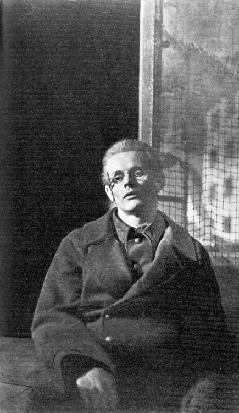

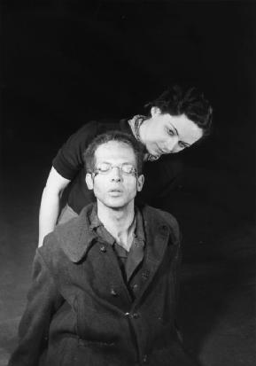
Aktuelle Aufführung: Uraufführung
Bei der Uraufführung saß das Publikum, nachdem der Vorhang gefallen war, minutenlang totenstill im Saal. Erst dann setzte der Applaus ein, der nicht aufhören wollte.
-- Hans Quest, 1984
Aktuelle Aufführung: Uraufführung
"Draußen vor der Tür" ist kein Theaterstück im üblichen Sinne. Es ist im wahrsten Sinn Hör-Spiel geblieben.
Die Regie von Wolfgang Liebeneiner unterstreicht noch die traumhafte Vision des Heimkehrers. Es sind skizzenhafte Szenen in einem unwirklichen Halbdunkel, in denen Beckmann, "einer von denen", die Höllenqualen des Ausgestoßenen und Heimatlosen durchlebt.
Die Regie von Wolfgang Liebeneiner unterstreicht noch die traumhafte Vision des Heimkehrers. Es sind skizzenhafte Szenen in einem unwirklichen Halbdunkel, in denen Beckmann, "einer von denen", die Höllenqualen des Ausgestoßenen und Heimatlosen durchlebt.
-- Der Spiegel, 29.11.1947
Aktuelle Aufführung: Hamburg
02.04.2011
Thalia-Theater
Inszenierung Luk Perceval
Band My Darkest Star
Bühne Katrin Brack
Beckmann Felix Knopp
Tod, Gott, Kaberettdirektor Barbara Nüsse
Herr Kramer Peter Maertes
Spieldauer 90 min
Perceval - Bühnenbild
- fast identisch große, leicht geneigte Spiegelwand
- perspektivische Irritation = Beckmanns Innenleben
- Katrin Brack
- Beckmanns verschobenes Innenleben
Perceval - Bühnenbild
- Katrin Brack
Perceval - Bühnenbild
- Katrin Brack
Perceval - Bühnenbild
Ein Brack-Bühnenbild ist ein zum Raum gewordener einfacher Einfall, der einen Abend in seiner Wirkung zusammenfasst.
Die Zeit (07.04.2011)
Perceval - Inszenierung
- Beckmann eröffnet: allein, ohne Bühnenbild, mit minimalem Licht, lange sucht er einen Anfang. General-Pause.
Der Spiegel (03.04.2011)
- Beckmann (Felix Knopp)
Perceval - Inszenierung
- auch im späteren Verlauf ändert sich dieses Bild nicht dramatisch
Die Zeit (07.04.2011)
- Luk Perceval hat schon öfter versucht, Musiktheater zu inszenieren: Othello in München, Molière-Marathon in Salzburg. (Information ebenfalls aus der Zeit)
Perceval - Inszenierung
- Beckmann wird von Schattenwesen verfolgt.
- Diese Wesen werden von Mitgliedern des Thalia-Theaterprojektes Eisenhans dargestellt, es sind Spieler, die mit dem Down-Syndrom geboren wurden.
Perceval - Inszenierung
Perceval - Szenen
- Laut Zeit ist die Szene Beckmann und OBERST die größte
- Laut Spiegel die Kabarettszene Wie der abgehobene Mann im Mond glänzt er - reflektiert durch die Spiegelwand - über der Bühne, windet sich im Schmerz seines hingewimmerten Lovesongs im Kreis, er gibt für ein paar Minuten alles. In diesem Moment zeigt sich, was man aus der Inszenierung hätte machen können, wenn man mehr vom Textstaub des Dramas weggeblasen hätte.
- Beckmann will seine Verantwortung für 11 Mann zurückgeben
Perceval - Szenen
- Felix Knopp
Perceval - Eindrücke
- Barbara Nüsse
Perceval - Eindrücke
- Felix Knopp, Barbara Nüsse
Perceval - Eindrücke
- Felix Knopp
Perceval - Eindrücke
- Peter Maertes
Perceval - Eindrücke
Perceval - Eindrücke
Perceval - Eindrücke
Perceval - Eindrücke
Perceval - Eindrücke
- Barbara Nüsse, Peter Maertes
Perceval - Zusammenfassung
- (...) die Inszenierung bricht nie aus der Nummernrevue Borcherts aus und produziert so am Ende mehr Langeweile als Pointierung. (Der Spiegel 03.04.2011)
- Weder Beckmann noch sein Schöpfer Borchert haben das Jahr 1947 überlebt. Aber beide sind noch da: mitten unter uns. (Die Zeit 07.04.2011)
- Hat denn keiner eine Antwort? (...) Das Theater ist auch dazu da, Fragen zu stellen. Aber wie hieß die Frage an diesem Abend eigentlich noch mal? (Hamburger Abendblatt 04.04.2011)
- Alles in allem ein gelungener Theater-Abend (Im Brechtschen Sinn)
Perceval - Zusammenfassung
- Die Musik funktioniert. Borcherts Sprache klingt einfach gut.
Ich bin auf der Suche nach einem menschlichen Theater. Einem Theater, das nicht nur zeigt, wie monströs der Mensch ist, aber gleichzeitig auch, wie sehr er auf der Suche ist nach Liebe, nach Schutz. Und wie verletzbar und angreifbar der Mensch ist. Und wie wir eigentlich alle in unseren Sehnsüchten, in unseren Ängsten gleich sind. Wir sind alle Kinder von Vater und Mutter, also in dem Sinn ist das eine ewige archaische Ursituation.
Luk Perceval
Aktuelle Aufführung: Bochum
04.05.2012
Inszenierung David Bösch
Bühne Dirk Thiele
Beckmann Florian Lange
Der andere Beckmann Nicola Mastroberardino
Spieldauer 50 min
Bösch - Bühnenbild
- Sehr karges Bühnenbild
- Links ein Waschbecken
- Auf dem Boden Erde
- Rechts eine Pfütze (u.a. die Elbe)
Bösch - Bühnenbild
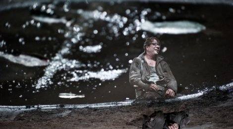
Bösch - Bühnenbild
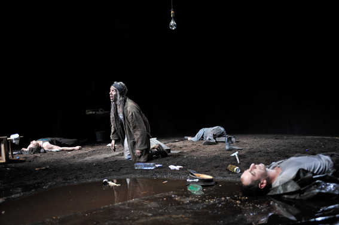
Bösch - Bühnenbild
- Auch Bösch setzt auf minimalistisches Bühnenbild und optische Effekte
- Hin und wieder setzt er große Schatten ein
Bösch - Bühnenbild
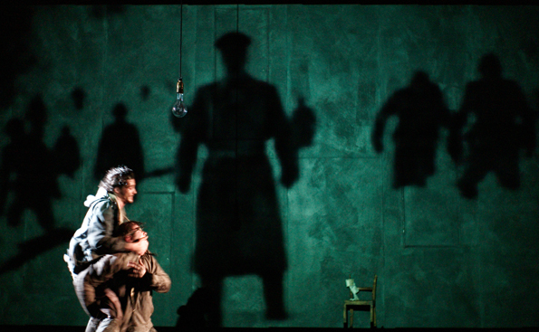
Bösch - Inszenierung
- Bösch konzentriert sich auf die emotionsgeladenen Stellen
aw.de - Kultur NRW
Bösch - Inszenierung
- Abweichung vom Originalablauf
- Der Auftritt von Gott steht am Anfang und wird am Ende wieder aufgegriffen
- Gott ist ein verlotterter, alter Mann mit staubiger Bibel
- Er liest aus der Genesis und deutet dabei auf das Bühnenbild
- Gottes Macht erliegt: Am Ende wird es nicht licht
Gott auf dem Rücken geschrieben
Bösch - Inszenierung
- Beckmann wird gespalten in den Resignierten und sein Alter Ego
- Der Widerpart misshandelt den anderen Beckmann
- Beide stehen in starkem Konflikt miteinander
- Nur manchmal sprechen sie Passagen zusammen
Bösch - Inszenierung
- Einziger Lichtblick in der dunklen Inszenierung ist das Mädchen
- Sie steigt aus einem Kanal, zündet aber eine Wunderkerze an und erhellt die Bühne
- Bevor sie wieder in die Unterwelt steigt winkt sie noch einen freundlichen Gruß
Bösch - Inszenierung
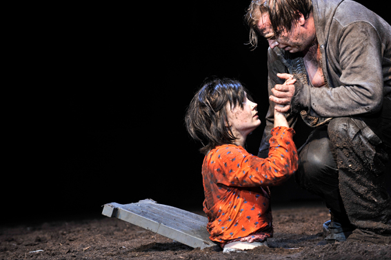
Bösch - Inszenierung

Bösch - Inszenierung
- Am Ende stehen die Beckmanns und der Einbeinige auf der Bühne und rauchen eine letzte Zigarette
- Gott tritt noch einmal auf
- Er versucht mit seinem Stock den Vorhang herunter zu dirigieren
- Nicht mal das gelingt ihm mehr: Er bleibt auf der Hälfte steccken
Bösch - Reaktion
Es fasziniert, wie Bösch diese Spielansätze aus Borcherts Stück herausarbeitet und sie zu einer Erzählung zusammenfügt. Die Darsteller erfüllen das Konzept mit beseeltem Spiel. Großer Beifall für die überwältigende Neubelebung eines tot geglaubten Textes.
wa.de - Kultur NRW
Aktuelle Aufführung: Berlin
29.03.2012
Schaubühne
Inszenierung Volker Lösch
Chorleitung Bernd Freytag
Bühne Carola Reuther
Cast: Johanna Geißler, Moritz Gottwald, Ulrich Hoppe, Sebastian Nakajew, Felix Römer, Leoni Schulz, Tilman Strauß
Lösch - Inszenierung
- Premiere und Vorstellungen am 2., 3. und 4. April aufgrund von Krankheit des Hauptdarstellers verschoben
- Draußen vor der Tür ist aber aus den Terminen der Schaubühne verschwunden
- Inszenierung trotzdem erwähnenswert!
Lösch - Inszenierung
- Nachtrag:
die Premiere musste aus Krankheitsgründen leider verschoben werden, wir suchen derzeit nach einem neuen geeigneten Termin, es steht allerdings noch nichts Konkretes fest.
Herzlich,
Annika Frahm
Lösch - Inszenierung
- Volker Lösch ergänzt die fiktive Geschichte von Draußen vor der Tür mit den authentischen Texten aus Soldaten – Protokolle vom Kämpfen, Töten und Sterben (Harald Welzer und Sönke Neitzel)
- Sein Kern von Beckmanns Kriegstrauma: die Stimmen, die er loswerden und verdrängen will
In von Briten und Amerikanern eigens eingerichteten Lagern wurden deutsche Kriegsgefangene aller Ränge und Waffengattungen heimlich abgehört. Sie sprachen über militärische Geheimnisse, über ihre Sicht auf die Gegner, auf die eigene Führung und auf die Judenvernichtung. Das Buch zeigt die Kriegswahrnehmung von Soldaten in historischer Echtzeit und vermittelt eine faszinierende und erschreckende Innenansicht des Zweiten Weltkriegs durch jene Soldaten, die große Teile Europas verwüsteten.
-- Amazon
Lösch - Inszenierung
Er (Borchert) spricht weder darüber, was die Soldaten gemacht haben, noch über andere Opfer als die deutschen Soldaten, und nur in ganz wenigen Andeutungen von den ermordeten Juden. Man kann mit Beckmann, der Hauptfigur, Mitleid haben, weil er traumatisiert aus dem Krieg zurückkehrt, aber man weiß nicht genau, was er da getan hat. Dieses Stück mit seiner präzisen Unschärfe vernebelt mehr als dass es erklärt. Den Deutschen hat es damals zumindest im Theater einen Neuanfang erlaubt.
-- Volker Lösch
Lösch - Inszenierung
Beckmann ist ein Musterbeispiel und Identifikationsangebot für alle Soldaten – auch für die, die jetzt aus Afghanistan heimkommen −, weil er sich zum Opfer und zum Mitläufer stilisiert: Befehl ist Befehl (...)
-- Volker Lösch
Lösch - Eindrücke
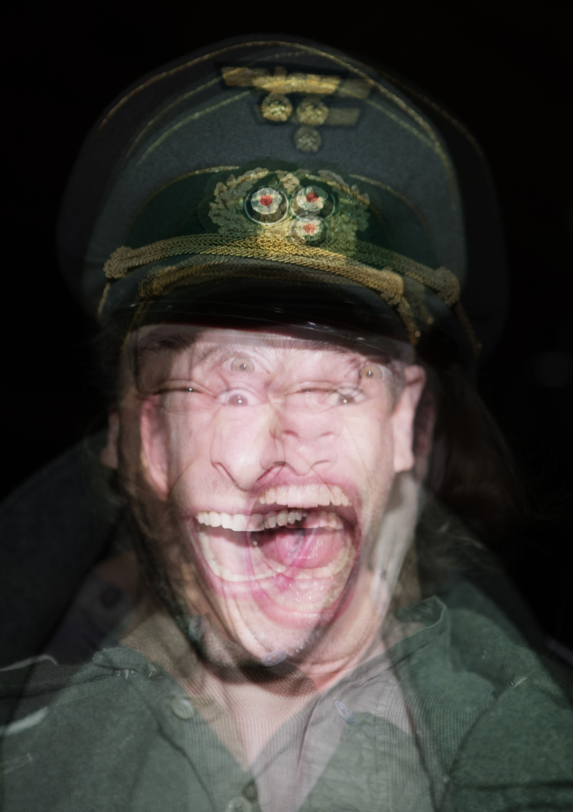
- Heiko Schäfer
Lösch - Eindrücke
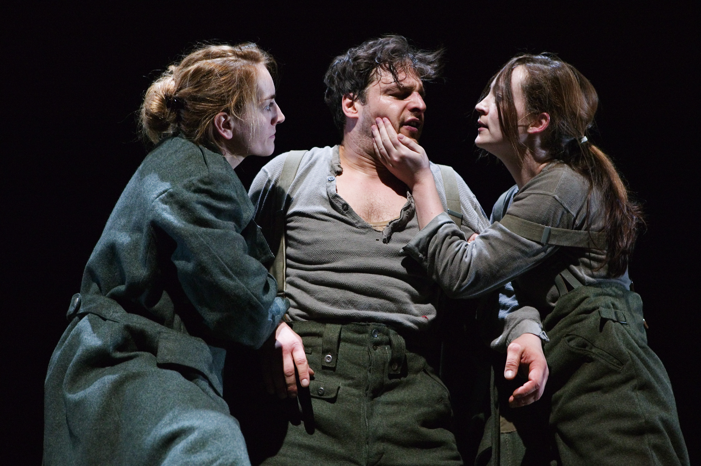
Lösch - Eindrücke
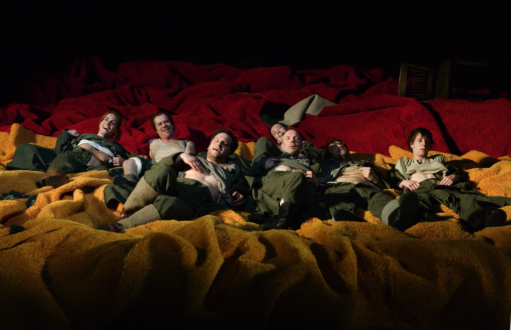
Lösch - Eindrücke
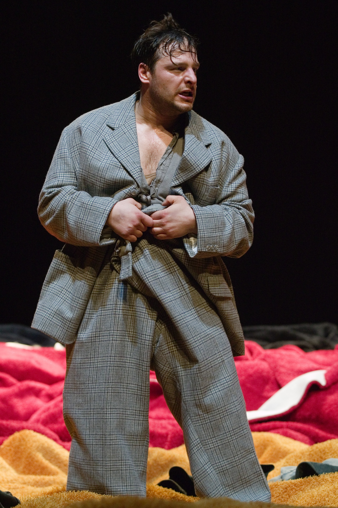
Lösch - Eindrücke
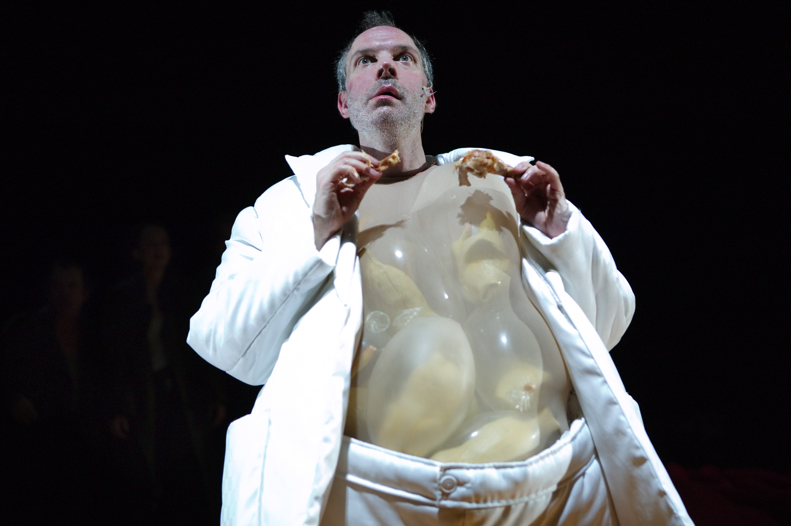
Lösch - Eindrücke
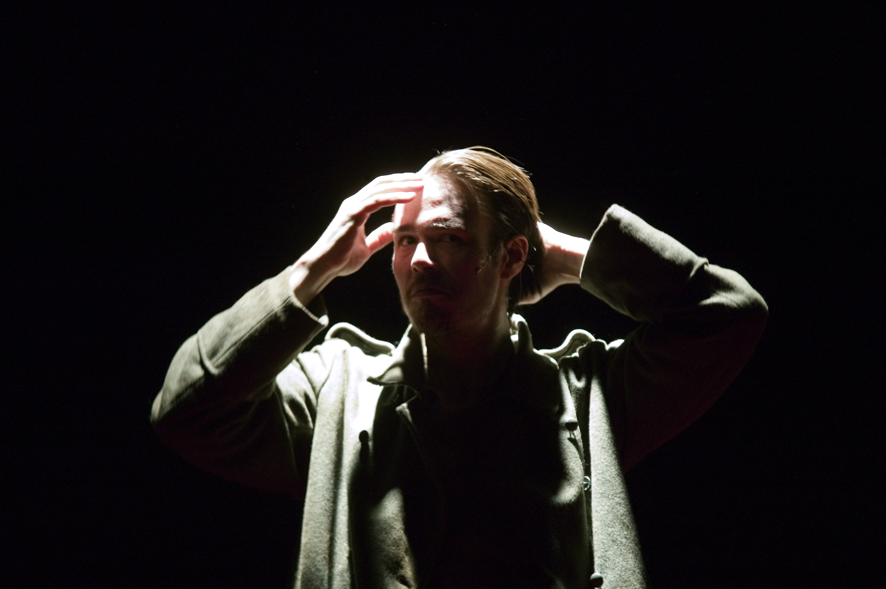
Lösch - Eindrücke
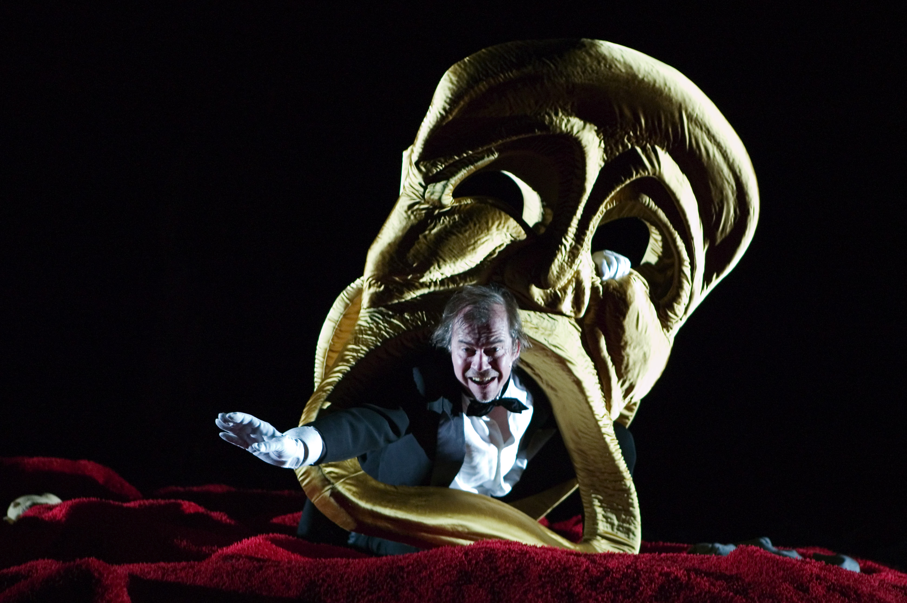
Lösch - Eindrücke
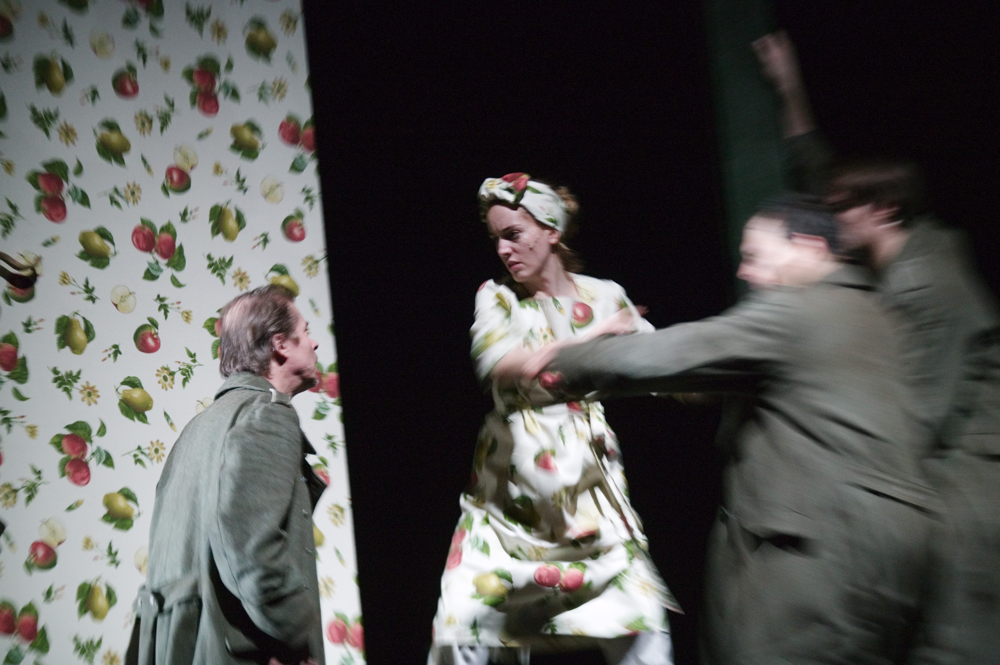
Quellen
- wikipedia.org, Suchwort "Draußen vor der Tür" [Stand: 19.06.2012]
- Bibliothekssystem Universität Hamburg
- Bildungsserver Hamburg
Vielen Dank für die Aufmerksamkeit!
| 20.06.2012 | Philipp Nowinski, Niels Garve | / |